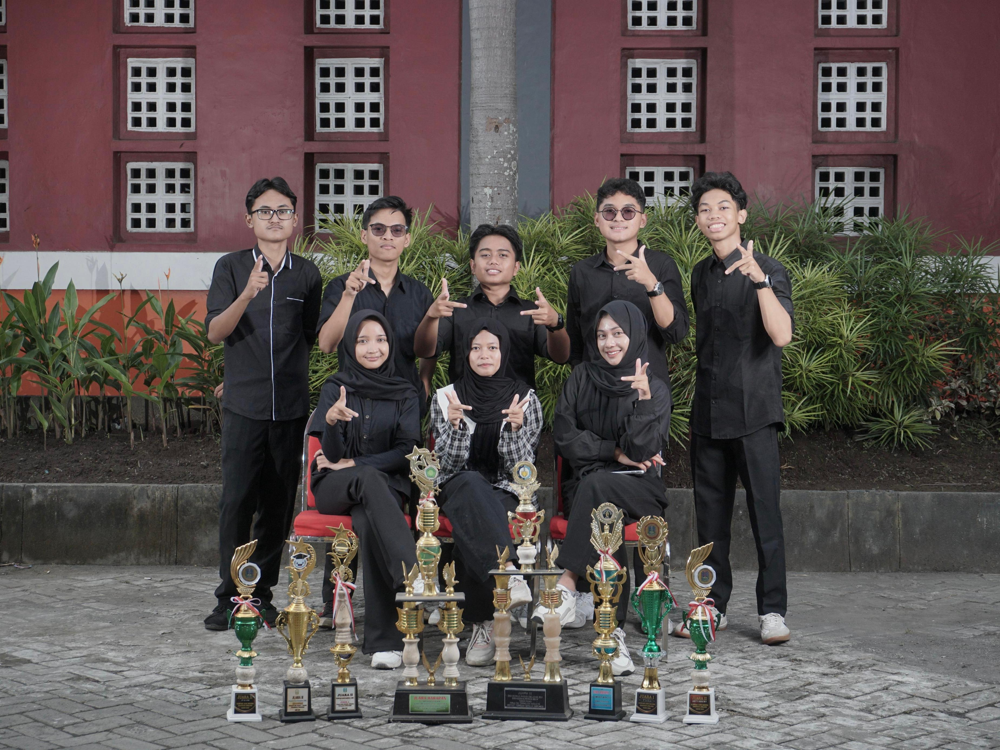
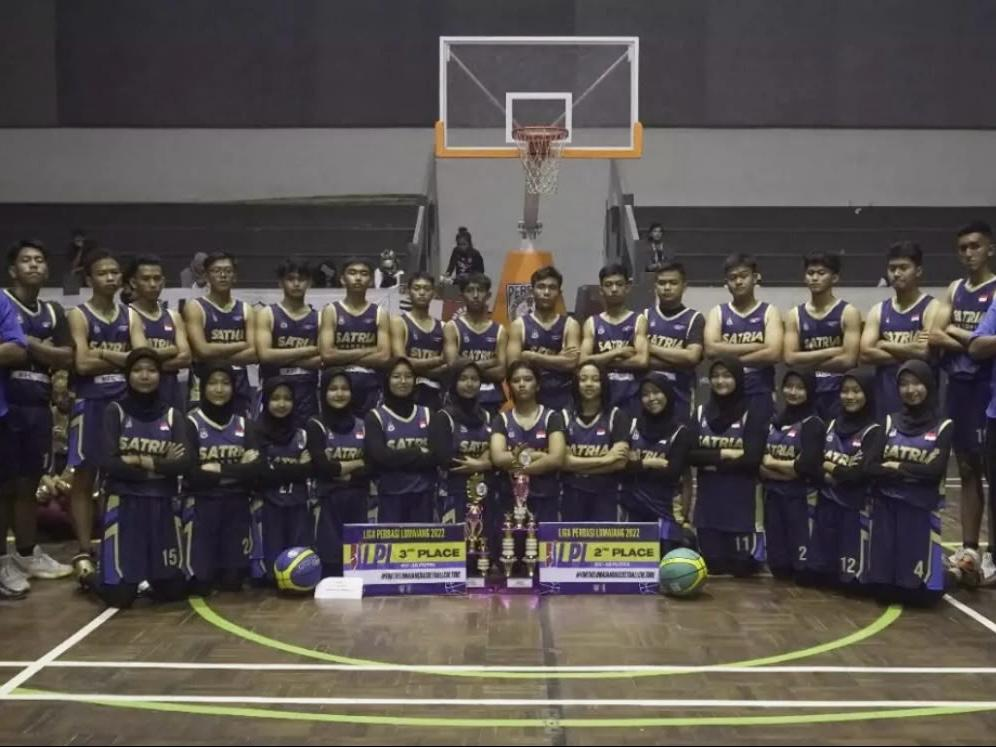
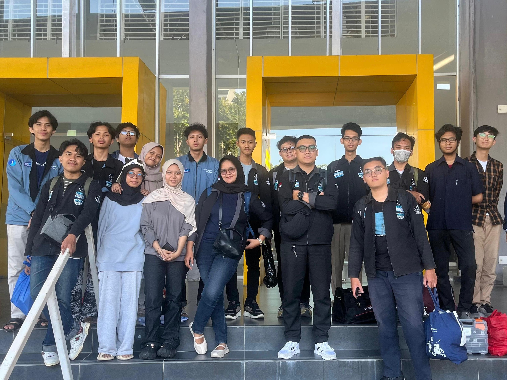

Achievement
Pencapaian dan penghargaan yang saya dapat selama menjalani perkuliahan dan mengikuti organisasi.

OSN Fisika 2024
Olimpiade Sains Nasional (OSN) adalah kompetisi sains berjenjang dari Kemendikbud yang diselenggarakan untuk mengukur kemampuan akademik siswa, dengan tahapan seleksi dari tingkat sekolah, Kabupaten/Kota (OSN-K), Provinsi (OSN-P), hingga Nasional.
- Meraih Juara 1 pada Olimpiade Sains Nasional bidang Fisika tingkat provinsi.
- Melalui rangkaian seleksi tingkat sekolah hingga provinsi sebelum meraih posisi puncak.

Liga Perbasi Lumajang (LPL) 2025
LPL adalah turnamen bola basket antar-sekolah se-Kabupaten Lumajang yang diselenggarakan oleh Perbasi Kabupaten Lumajang. Kompetisi ini bertujuan untuk memetakan potensi atlet muda sekaligus memajukan ekosistem olahraga bola basket di daerah Lumajang.
- Meraih Juara 2 dalam Liga Perbasi Lumajang (LPL) yang diselenggarakan oleh Perbasi Lumajang.
- Berkompetisi mewakili tim di ajang bola basket tingkat kabupaten.

IMAJAYA X INI LHO ITS! 2026
INI LHO ITS! (ILITS) merupakan kegiatan pengenalan kampus dan keilmuan Institut Teknologi Sepuluh Nopember (ITS) yang bertujuan menyebarluaskan semangat pendidikan tinggi kepada masyarakat. Kegiatan ini melibatkan berbagai Forum Daerah (Forda), termasuk IMAJAYA ITS (Ikatan Mahasiswa Lumajang di Surabaya).
- Terpilih sebagai Ketua Forum Daerah (Kaforda) IMAJAYA ITS, Ikatan Mahasiswa Lumajang di Surabaya
- Dianugerahi predikat Best Kaforda Ini Lho ITS! 2026 atas kepemimpinan dan kontribusinya.

RoboCup Incheon - Middle Size League
RoboCup adalah kompetisi robotika internasional yang bertujuan memajukan riset kecerdasan buatan. Pada kategori Middle Size League (MSL), tim IRIS ITS bertanding menggunakan lima robot sepak bola fully autonomous yang harus mampu membaca situasi lapangan dan mengambil keputusan taktis secara real-time tanpa kendali manual.
- Meraih posisi ketiga pada kategori Robot Soccer Middle Size League di RoboCup 2026, Incheon, Korea.
- Berkompetisi melawan tim robotika dari berbagai negara di ajang robotika internasional.